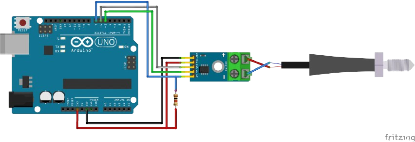
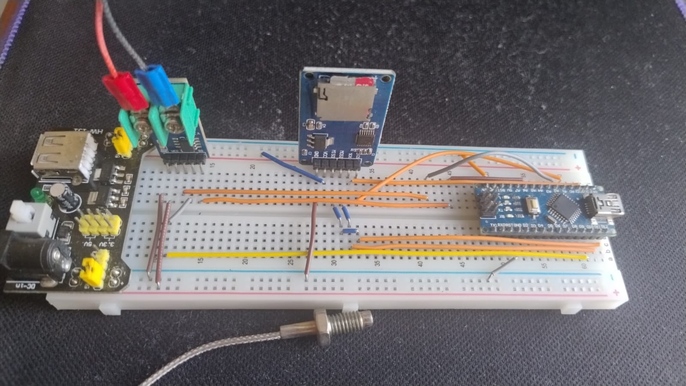

Arquitectura de Conexiones (Pinout)
Para garantizar una comunicación estable y evitar colisiones de datos en el bus SPI, el hardware está dividido en dos segmentos lógicos: SPI por Hardware (para alta velocidad) y SPI por Software (para el sensor).
Diseño del Circuito: Separamos físicamente el módulo de la tarjeta SD del sensor MAX6675. La memoria SD utiliza los pines dedicados del Arduino Nano para máxima velocidad de escritura, mientras que el sensor de temperatura utiliza pines digitales genéricos gracias a nuestra librería personalizada.
Conexión: Arduino Nano ➔ Módulo MicroSD
| Pin Arduino Nano | Pin Módulo MicroSD | Función |
|---|---|---|
| 5V | VCC | Alimentación (Energía) |
| GND | GND | Tierra común |
| D11 | MOSI | SPI Hardware: Envío de datos a la SD |
| D12 | MISO | SPI Hardware: Recepción de datos |
| D13 | SCK | SPI Hardware: Reloj de sincronización |
| A5 / D19 | CS | Chip Select (Activación de la memoria) |
Conexión: Arduino Nano ➔ Sensor MAX6675
| Pin Arduino Nano | Pin Módulo MAX6675 | Función |
|---|---|---|
| 5V | VCC | Alimentación |
| GND | GND | Tierra común |
| D3 | SO / DO | SPI Software: Salida de datos del sensor |
| D10 | CS | Chip Select (Activación del sensor) |
| D2 | SCK / CLK | SPI Software: Reloj de lectura lenta |
Diagrama Fritzing

Montaje Real Final

Vista del prototipo operando en entorno controlado. En esta fase, los componentes están integrados en una protoboard para facilitar el análisis de señales y la calibración del código antes de pasar a la fase de soldadura en placa PCB.